REAR STABILIZER BAR (w/ KDSS) > REMOVAL |
| 1. REMOVE STABILIZER CONTROL VALVE PROTECTOR |
 |
Detach the clamp, and disconnect the connector from the protector.
Remove the 3 bolts and protector.
| 2. OPEN STABILIZER CONTROL WITH ACCUMULATOR HOUSING SHUTTER VALVE |
Using a 5 mm hexagon socket wrench, loosen the lower and upper chamber shutter valves of the stabilizer control with accumulator housing 2.0 to 3.5 turns.

| 3. REMOVE REAR WHEEL |
| 4. REMOVE TAILPIPE ASSEMBLY |
for 2UZ-FE:
Remove the tailpipe (Click here).
for 1VD-FTV:
Remove the tailpipe (Click here).
| 5. REMOVE EXHAUST CENTER PIPE ASSEMBLY |
for 2UZ-FE:
Remove the center exhaust pipe (Click here).
for 1VD-FTV:
Remove the center exhaust pipe (Click here).
| 6. DISCHARGE SUSPENSION FLUID PRESSURE |
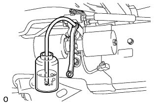 |
Connect the hose to the bleeder plug for the stabilizer control with accumulator housing and loosen the bleeder plug.
Discharge the suspension fluid from the stabilizer control with accumulator housing.
After the fluid pressure has dropped and oil has drained out, tighten the bleeder plug and remove the hose.
| 7. SUPPORT REAR AXLE HOUSING ASSEMBLY |
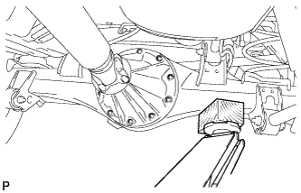 |
Support the rear axle housing with a jack using a wooden block to avoid damage.
| 8. REMOVE REAR STABILIZER END BRACKET |
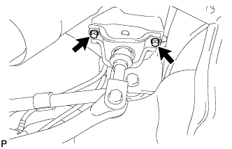 |
Remove the 2 bolts and disconnect the stabilizer end bracket.
| 9. REMOVE REAR STABILIZER BAR SUB-ASSEMBLY |
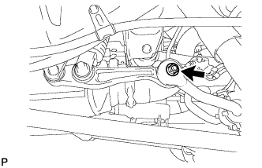 |
Remove the nut and disconnect the stabilizer link from the stabilizer bar.
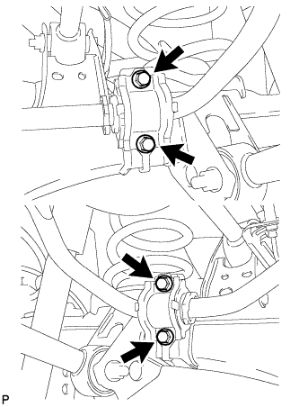 |
Remove the 4 bolts and stabilizer bar with the bushs and brackets.
| 10. REMOVE STABILIZER LINK SUB-ASSEMBLY |
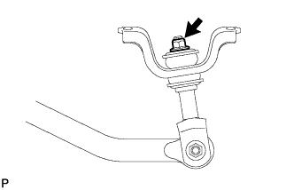 |
Remove the nut, 3 retainers and 2 cushions, and disconnect the stabilizer link from the bracket.
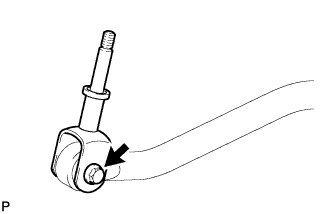 |
Remove the nut, bolt and stabilizer link.
| 11. REMOVE REAR STABILIZER CONTROL TUBE INSULATOR |
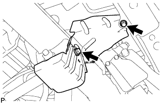 |
Remove the 2 bolts and rear stabilizer control tube insulator.
| 12. REMOVE REAR STABILIZER CONTROL CYLINDER |
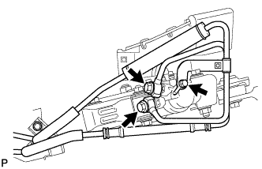 |
Remove the 2 union bolts with the 2 gaskets and bolt, and disconnect the stabilizer control tube.
Remove the bolt and stabilizer control cylinder.
| 13. REMOVE REAR NO. 2 STABILIZER LINK |
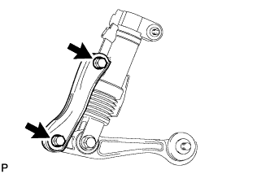 |
Remove the 2 bolts, 2 nuts and No. 2 rear stabilizer link.
| 14. REMOVE REAR STABILIZER LINK ASSEMBLY |
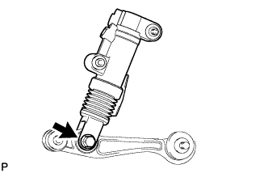 |
Remove the bolt, nut and rear stabilizer link.
| 15. REMOVE REAR SUSPENSION CONTROL BLEEDER PLUG |
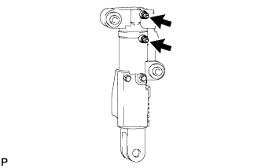 |
Remove the 2 rear suspension control bleeder plugs from the rear stabilizer control cylinder.